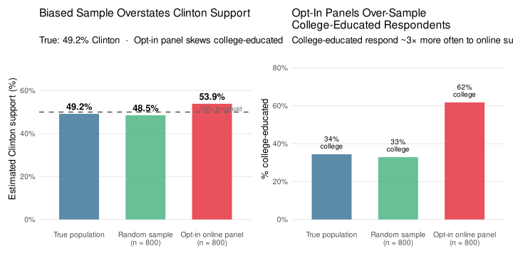
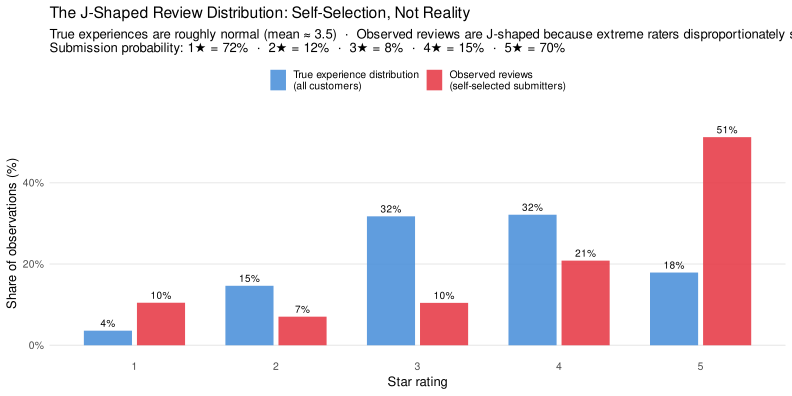
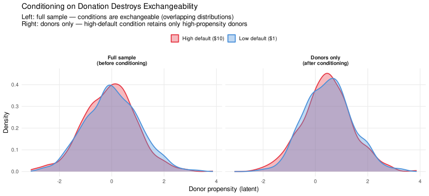
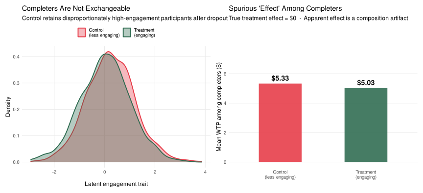
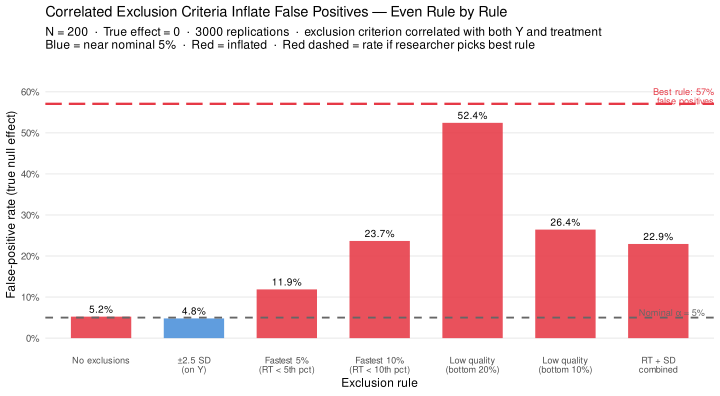

▶ Load required packages
library(tidyverse)
library(ggplot2)
library(knitr)
library(scales)
library(patchwork)
set.seed(2025)library(tidyverse)
library(ggplot2)
library(knitr)
library(scales)
library(patchwork)
set.seed(2025)Part 3 established that random assignment is a procedure, not a guarantee. Its success depends on sample size and the complexity of the outcome construct: the more dimensions Y has, the more observations you need for randomization to plausibly achieve exchangeability. That was a problem of degree — in principle, you can always collect more data.
This part introduces a different and more fundamental problem. Selection effects are features of the data-collection environment that create systematic, non-random differences between groups before, during, or after data collection. Unlike the orthogonality failures of Part 3, these are not fixable by running more participants. They are structural. A study can have perfect randomization of a fundamentally non-representative or self-selected sample and still produce entirely invalid conclusions.
The distinction is worth making precise:
| Part 3 failure | Part 4 failure |
|---|---|
| Random assignment is executed, but the sample is too small to achieve exchangeability by chance | The pool of observations entering (or remaining in) the analysis is itself non-randomly determined |
| Fixable with more data, blocked randomization, or structural designs (Part 5) | Not fixable by better randomization — the selection process operates outside the researcher’s randomization step |
| Creates imbalance between conditions on pre-existing covariates | Creates a sample that misrepresents the intended population or analysis set |
Module 1 showed that your observed Y can fail to reflect your latent construct because of measurement artifacts — your scale picks up variance from unintended constructs, from non-invariant item parameters, or from latent subgroups. Selection effects represent the exact same problem one level up: your observed sample can fail to reflect your intended population or analysis group for parallel reasons.
Just as a biased scale gives you the wrong latent score for a respondent, a biased sampling or exclusion process gives you the wrong set of respondents.
Selection effects appear in four structural forms. We cover each in turn.
Non-representativeness means the observations that enter your study are systematically unlike the population you intend to generalize to. The groups may still be exchangeable with each other — the randomization may have worked — but the entire study is anchored to the wrong population.
The 2016 US presidential election produced one of the most widely analyzed forecasting failures in modern polling history. Many pre-election polls — particularly online opt-in panels — showed Hillary Clinton with a consistent and comfortable lead in key swing states. The final result was a Trump victory.
The core problem was not that polls are inherently flawed — carefully conducted probability samples were closer to the final result. The problem was sample composition. Online opt-in panels draw participants who choose to participate. That group over-represented:
All three of these characteristics predicted support for Clinton in 2016. The sample was not representative of likely voters in the midwest and rust belt states that determined the electoral college outcome. Pollsters could build a perfectly valid internal random sample from their panel — comparing Clinton- and Trump-leaning respondents with exact balance — while their whole panel remained systematically unrepresentative of the electorate.
set.seed(2025)
N_pop <- 10000
# True population: 51% Trump, 49% Clinton
# College-educated: 35% of population; 65% Clinton-leaning among college-educated
# Non-college: 65% of population; 40% Clinton-leaning
pop <- tibble(
college = rbinom(N_pop, 1, 0.35),
clinton = ifelse(college == 1,
rbinom(N_pop, 1, 0.65),
rbinom(N_pop, 1, 0.40))
)
true_clinton <- mean(pop$clinton)
# Random sample: 800 participants drawn at random
rand_idx <- sample(N_pop, 800)
rand_clinton <- mean(pop$clinton[rand_idx])
# Biased opt-in sample: college-educated 3× more likely to respond
response_prob <- ifelse(pop$college == 1, 0.15, 0.05)
responded <- rbinom(N_pop, 1, response_prob) == 1
# Subsample to ~800 from those who responded
opt_in_idx <- sample(which(responded), min(800, sum(responded)))
opt_clinton <- mean(pop$clinton[opt_in_idx])
# College composition of each sample
college_pop <- mean(pop$college)
college_rand <- mean(pop$college[rand_idx])
college_opt <- mean(pop$college[opt_in_idx])
results_df <- tibble(
Sample = factor(c("True population", "Random sample\n(n = 800)",
"Opt-in online panel\n(n ≈ 800)"),
levels = c("True population", "Random sample\n(n = 800)",
"Opt-in online panel\n(n ≈ 800)")),
Clinton_pct = c(true_clinton, rand_clinton, opt_clinton) * 100,
College_pct = c(college_pop, college_rand, college_opt) * 100,
Source = c("truth", "random", "biased")
)
p_vote <- ggplot(results_df, aes(x = Sample, y = Clinton_pct, fill = Source)) +
geom_col(width = 0.6, alpha = 0.88) +
geom_hline(yintercept = 50, linetype = "dashed", color = "gray40", linewidth = 0.8) +
geom_text(aes(label = sprintf("%.1f%%", Clinton_pct)),
vjust = -0.5, size = 4.5, fontface = "bold") +
annotate("text", x = 3.45, y = 51.5, label = "50% threshold",
color = "gray40", size = 3.2, hjust = 1) +
scale_fill_manual(values = c("truth" = "#457b9d", "random" = "#52b788",
"biased" = "#e63946"), guide = "none") +
scale_y_continuous(limits = c(0, 75), labels = function(x) paste0(x, "%")) +
labs(x = NULL, y = "Estimated Clinton support (%)",
title = "Non-Representative Sampling Overstates Clinton Support",
subtitle = paste0("True population: ", sprintf("%.1f", true_clinton * 100),
"% Clinton \u00b7 ",
"Opt-in panel over-samples college-educated voters")) +
theme_minimal(base_size = 13) +
theme(panel.grid.minor = element_blank(), panel.grid.major.x = element_blank())
p_college <- ggplot(results_df, aes(x = Sample, y = College_pct, fill = Source)) +
geom_col(width = 0.6, alpha = 0.88) +
geom_text(aes(label = sprintf("%.1f%%\ncollege-educated", College_pct)),
vjust = -0.4, size = 3.5, lineheight = 0.85) +
scale_fill_manual(values = c("truth" = "#457b9d", "random" = "#52b788",
"biased" = "#e63946"), guide = "none") +
scale_y_continuous(limits = c(0, 0.85), labels = percent_format(accuracy = 1)) +
labs(x = NULL, y = "% college-educated in sample",
title = "Why: Opt-In Panel Over-Samples College-Educated Respondents",
subtitle = "College-educated voters respond to online surveys at ~3\u00d7 the rate of non-college voters") +
theme_minimal(base_size = 13) +
theme(panel.grid.minor = element_blank(), panel.grid.major.x = element_blank())
p_vote + p_college
The left panel shows the vote-share estimate from each source. The random sample closely tracks the true population; the opt-in panel substantially overstates Clinton support. The right panel explains why: college-educated respondents are dramatically overrepresented in the opt-in panel. This is not a failure of the pollster’s internal analysis — it is a failure of the sampling mechanism that determined who entered the study.
The key point for experimenters: selecting participants from an online panel and then randomly assigning them to conditions achieves exchangeability within the panel. It does not solve the problem that the panel itself is non-representative. Your internal validity can be high while your external validity is zero.
MTurk and Prolific are the dominant platforms for online behavioral research. Participants on these platforms self-select in based on three features:
Each of these features creates a different non-representative subsample of the platform population — and the platform population is itself non-representative of any general population. MTurk workers are younger, more educated, more liberal, and more tech-savvy than the US general public. Prolific users are similarly skewed, though in somewhat different ways and with better demographic controls available.
In our running example, a study titled “Opinions about eco-certified coffee” on MTurk is not drawing from a population of general coffee consumers. It is drawing from a subset of MTurk workers who:
The randomization within that sample may be perfectly executed — eco-label vs. control groups may be fully exchangeable in terms of every measured covariate. But the effect you estimate is the eco-label effect for that particular self-selected group, not for coffee consumers in general. Whether the effect generalizes depends on whether the self-selection process is correlated with the moderators of the eco-label effect (e.g., environmental values, income, brand awareness).
Non-representativeness does not only afflict participant samples — it also afflicts stimulus samples. This is the direct stimulus-level analog of the participant selection problem, and it connects directly to the Wells & Windschitl (1999) stimulus sampling reading in the Module 2 introduction.
The original finding. Song & Schwarz (2009) reported that food additives and amusement-park rides with difficult-to-pronounce names were judged as more hazardous than easier-to-pronounce versions. The explanation was processing fluency: names that are hard to process feel unfamiliar and foreign, activating a heuristic that foreign = risky. The result became a widely cited demonstration of how subtle perceptual cues influence risk judgment.
The problem. Song & Schwarz did not randomly sample their stimuli from the population of food additives and roller coasters. They selected specific stimuli and then assigned pronounceability labels to them. Bahník & Vranka (2017) noticed that the stimuli assigned to the “hard to pronounce” condition were not merely harder to pronounce — they had other features that genuinely made them seem more exotic or obscure. The conditions were not exchangeable at the stimulus level.
The replication. When Bahník & Vranka drew stimuli randomly from a broader population of additives and rides and assigned them to pronunciation conditions, the fluency-risk effect did not replicate. The observed correlation between pronounceability and perceived risk in the original study reflected the non-random selection of specific stimuli, not a generalizable cognitive effect.
Recall from Part 3 that exchangeability requires treatment and control groups to be interchangeable on every potential cause of Y. When participants are randomized, we worry about whether the person-level covariates are balanced. When stimuli are hand-picked rather than randomly sampled, we face the exact same problem at the stimulus level:
The “hard to pronounce” stimuli and “easy to pronounce” stimuli may differ on dimensions other than pronounceability — and those other dimensions may independently predict the outcome.
This is why treating stimuli as fixed effects — using a single advertisement, a single brand name, a single vignette — is a validity threat. Your conditions are not exchangeable if your stimuli were selected rather than randomly sampled. The fluency-risk finding is a high-profile example of what can go wrong.
Self-selection occurs when individuals determine their own membership in the observed group rather than being assigned by the researcher. The resulting group is not exchangeable with those who selected out — not because randomization failed, but because there was never any randomization to speak of.
If you have shopped on Amazon, you have noticed that product reviews tend to cluster at the extremes. Few products have a normally distributed spread of ratings. Instead, the distribution is J-shaped (or reverse-J-shaped): lots of 1-star reviews, lots of 5-star reviews, and relatively few 2, 3, and 4-star reviews.
The true distribution of product experiences is approximately normal — most purchases are satisfactory, some are excellent, some are disappointing. The observed distribution is J-shaped because people self-select into submitting a review. The selection mechanism is asymmetric:
set.seed(2025)
N_cust <- 50000
# True experience: roughly normal, clipped to 1–5
true_exp <- pmax(1, pmin(5, round(rnorm(N_cust, mean = 3.5, sd = 1.1))))
# Review submission probability by star rating
# Mirrors empirically observed patterns: high at extremes, low in middle
submit_prob <- c("1" = 0.72, "2" = 0.12, "3" = 0.08, "4" = 0.15, "5" = 0.70)
prob_vec <- submit_prob[as.character(true_exp)]
submitted <- rbinom(N_cust, 1, prob_vec) == 1
obs_exp <- true_exp[submitted]
# Build plotting data
true_df <- tibble(stars = true_exp) |>
count(stars) |>
mutate(pct = n / sum(n), source = "True experience distribution\n(all customers)")
obs_df <- tibble(stars = obs_exp) |>
count(stars) |>
mutate(pct = n / sum(n), source = "Observed reviews\n(self-selected submitters)")
plot_df <- bind_rows(true_df, obs_df) |>
mutate(source = factor(source,
levels = c("True experience distribution\n(all customers)",
"Observed reviews\n(self-selected submitters)")))
ggplot(plot_df, aes(x = factor(stars), y = pct, fill = source)) +
geom_col(position = position_dodge(0.75), width = 0.68, alpha = 0.88) +
geom_text(aes(label = sprintf("%.0f%%", pct * 100)),
position = position_dodge(0.75), vjust = -0.4, size = 3.5) +
scale_fill_manual(values = c(
"True experience distribution\n(all customers)" = "#4a90d9",
"Observed reviews\n(self-selected submitters)" = "#e63946"
), name = NULL) +
scale_y_continuous(labels = percent_format(accuracy = 1), limits = c(0, 0.55)) +
labs(x = "Star rating", y = "Share of observations (%)",
title = "The J-Shaped Review Distribution: Self-Selection, Not Reality",
subtitle = paste0(
"True experiences are roughly normal (mean \u2248 3.5) \u00b7 ",
"Observed reviews are J-shaped because extreme raters disproportionately submit\n",
"Submission probability: 1\u2605 = 72% \u00b7 2\u2605 = 12% \u00b7 ",
"3\u2605 = 8% \u00b7 4\u2605 = 15% \u00b7 5\u2605 = 70%")) +
theme_minimal(base_size = 13) +
theme(panel.grid.minor = element_blank(), panel.grid.major.x = element_blank(),
legend.position = "top")
The red bars (observed reviews) are dramatically different from the blue bars (true experience distribution). A researcher who draws conclusions from the review data alone — “most buyers either love or hate this product” — is drawing conclusions from a self-selected sample, not from customer experience. Average star ratings systematically overstate dissatisfaction (1-star submitters are overrepresented) and overstate exceptional satisfaction (5-star submitters are overrepresented), while the large middle group of satisfied-but-not-enthusiastic customers is nearly invisible.
Email marketing analytics provide another common source of self-selection bias. Open rates, click rates, and conversion rates are calculated on the denominator of people who chose to open the email. That group is not a random draw from the full mailing list.
Consider a marketing analyst studying whether an eco-label message in a promotional email increases conversion to purchase. She sends the email to 100,000 customers and observes a 22% open rate — 22,000 people opened the email. Of those, 8% converted. She concludes that the eco-label message has a strong effect among “engaged customers.”
The problem: the 22,000 people who opened the email are already a self-selected group. They opened because they had prior interest in the sender, the product category, or the subject line. Among the 78,000 who did not open, the eco-label message had no opportunity to work — but their non-response is itself informative: they are less engaged with the brand and likely less responsive to any message. The conversion rate among openers reflects the intersection of (a) the eco-label effect and (b) the characteristics of people who open emails in the first place. These two things cannot be disentangled without data on the full sample.
Perhaps the most important and most easily overlooked form of self-selection in experiments occurs when the analysis conditions on a decision that participants make during the study. Goswami & Urminsky (2016) provide a clear example using charitable donation experiments.
The study design. Participants were randomly assigned to see a charitable giving solicitation with either a low default donation amount ($1) or a high default donation amount ($10). There were two outcomes of interest: (1) whether the participant chose to donate at all; and (2) among those who donated, how much they donated.
Stage 1 — the donate/don’t-donate decision. At this stage, the two experimental groups are exchangeable. Random assignment worked. We can straightforwardly estimate the causal effect of the default on the probability of donating.
Stage 2 — how much to donate. This analysis is restricted to participants who chose to donate. And here is where the exchangeability breaks down. The decision to donate is influenced by the default amount. A high default ($10) changes who decides to donate:
The result is that the composition of donors is different across conditions. The high-default condition retains only the more committed donors (those willing to give at least $10); the low-default condition retains the committed donors plus the borderline donors (who give a small amount). These two subsets are not exchangeable.
set.seed(2025)
N_don <- 2000
sim_don <- tibble(
# True giving propensity: higher = more committed donor
propensity = rnorm(N_don, 0, 1),
# Random assignment
high_default = rbinom(N_don, 1, 0.5),
# Stage 1: probability of donating
# High default raises threshold: only donate if propensity > 0.4 (vs. > -0.3 for low default)
p_donate = plogis(propensity * 1.2 - 0.4 * high_default),
donated = rbinom(N_don, 1, p_donate),
# Stage 2: amount, conditional on donating
# True effect of high default on amount = $1.50 (anchoring)
# But high donors have higher baseline propensity in high-default condition
amount_latent = 5 + 1.5 * high_default + 2.0 * propensity + rnorm(N_don, 0, 1.5),
amount = ifelse(donated == 1, pmax(0.5, amount_latent), NA_real_)
)
# ── Balance: full sample (before conditioning) ───────────────────────────────
balance_full <- sim_don |>
group_by(high_default) |>
summarise(
n = n(),
mean_prop = round(mean(propensity), 3),
pct_donate = round(mean(donated) * 100, 1),
.groups = "drop"
) |>
mutate(Condition = ifelse(high_default == 1, "High default ($10)", "Low default ($1)")) |>
dplyr::select(Condition, n, `Mean propensity` = mean_prop,
`% who donate` = pct_donate)
# ── Balance: donors only (after conditioning) ────────────────────────────────
donors <- sim_don |> filter(donated == 1)
balance_donors <- donors |>
group_by(high_default) |>
summarise(
n = n(),
mean_prop = round(mean(propensity), 3),
mean_amount = round(mean(amount, na.rm = TRUE), 2),
.groups = "drop"
) |>
mutate(Condition = ifelse(high_default == 1, "High default ($10)", "Low default ($1)")) |>
dplyr::select(Condition, n, `Mean propensity (among donors)` = mean_prop,
`Mean donation amount ($)` = mean_amount)
# ── Plot: propensity distribution by condition, full vs. donors ──────────────
plot_data <- bind_rows(
sim_don |> mutate(subset = "Full sample\n(before conditioning)"),
donors |> mutate(subset = "Donors only\n(after conditioning)")
) |>
mutate(
Condition = ifelse(high_default == 1, "High default ($10)", "Low default ($1)"),
subset = factor(subset,
levels = c("Full sample\n(before conditioning)",
"Donors only\n(after conditioning)"))
)
ggplot(plot_data, aes(x = propensity, fill = Condition, color = Condition)) +
geom_density(alpha = 0.35, linewidth = 0.9) +
facet_wrap(~subset, nrow = 1) +
scale_fill_manual(values = c("High default ($10)" = "#e63946",
"Low default ($1)" = "#4a90d9"), name = NULL) +
scale_color_manual(values = c("High default ($10)" = "#e63946",
"Low default ($1)" = "#4a90d9"), name = NULL) +
labs(x = "Donor propensity (latent)", y = "Density",
title = "Conditioning on Donation Destroys Exchangeability",
subtitle = paste0(
"Left: full sample — conditions are exchangeable (overlapping distributions)\n",
"Right: donors only — high-default condition retains only high-propensity donors")) +
theme_minimal(base_size = 13) +
theme(panel.grid.minor = element_blank(), legend.position = "top",
strip.text = element_text(face = "bold"))
The left panel confirms that randomization worked: the full-sample distributions of donor propensity are nearly identical across conditions — the groups are exchangeable before anyone makes a donation decision. The right panel shows what happens after conditioning: the high-default condition now contains a disproportionate share of high-propensity donors. Their average donation appears lower than expected from the anchoring hypothesis alone, because the low-default condition’s average is inflated by a larger share of committed high-propensity donors who give generously. Any naive comparison of mean donation amounts across conditions conflates the anchoring effect with this composition shift.
kable(balance_full,
caption = "Balance check: full sample (before conditioning on donation)")| Condition | n | Mean propensity | % who donate |
|---|---|---|---|
| Low default ($1) | 959 | 0.026 | 50.2 |
| High default ($10) | 1041 | -0.063 | 38.1 |
kable(balance_donors,
caption = "Balance check: donors only (after conditioning) — propensity is no longer balanced")| Condition | n | Mean propensity (among donors) | Mean donation amount ($) |
|---|---|---|---|
| Low default ($1) | 481 | 0.497 | 5.97 |
| High default ($10) | 397 | 0.448 | 7.38 |
A researcher might think the solution is to include non-donors in the amount analysis — just force every participant to report an amount, and let them respond with $0. The problem is that $0 from a non-donor is categorically different from $0.01 from a reluctant donor. These two data points reflect different decisions from different decision processes. A participant who decided not to donate and reported $0 was never in the donation decision-making process; a participant who decided to donate a small amount was. Pooling them into a single continuous outcome conflates two qualitatively different behavioral states.
The correct approach is to separate the two-stage process analytically: (1) report and analyze the effect of the default on the probability of donating (where groups remain exchangeable); (2) separately report and analyze the effect on conditional donation amount with the explicit caveat that this second analysis is compromised by the conditioning problem. Module 3, Part 2 will discuss methods — including Heckman selection models — for addressing selection into a conditional sample.
Two related but structurally distinct problems arise when observations leave the sample before or during the study.
Survivorship bias: the observations that did not survive — those that were filtered out before entering the observed sample — are permanently absent. You never had them. Their absence is invisible unless you reason carefully about what would have needed to be there.
Attrition bias: observations enter the sample at the start, but leave non-randomly during data collection. They were in the dataset at time 1; they are gone by time 2. Because you have their baseline measurements, the problem is at least detectable — which survivorship is not.
During World War II, the Statistical Research Group at Columbia University was asked to advise the US military on where to add armor to bomber aircraft. The military’s data showed the following damage pattern on returning planes: bullet holes were concentrated on the wings, fuselage, and tail. The initial proposal was to reinforce those areas.
Abraham Wald pointed out the error. The data came only from planes that returned. The planes that were shot down and never returned — the non-survivors — were hit somewhere else. The absence of engine hits in the data on surviving planes was not evidence that engines were rarely hit. It was evidence that planes hit in the engines did not survive to be counted.
Reinforcing the wings and fuselage would have been reinforcing exactly the places that could absorb damage without bringing a plane down. The right conclusion was to reinforce the engines — precisely because they were not represented in the damage data.
The general structure. In any survivorship problem:
This structure appears throughout business and social research:
Attrition bias is the longitudinal analog of survivorship, with a critical difference: participants started in the study and then left. You have their baseline measurements. The loss is not invisible — it is detectable.
In a clinical trial or longitudinal panel, participants drop out for systematic reasons:
Both patterns produce biased estimates of treatment trajectories and effect sizes. And the two patterns can partially cancel each other, making the net bias hard to sign without careful investigation of who dropped out and when.
Why the survivorship/attrition distinction matters methodologically:
| Survivorship bias | Attrition bias | |
|---|---|---|
| When does the selection occur? | Before the study begins (or before the observation window) | During the study, after enrollment |
| Do we have any data on the absent observations? | No — they never entered the sample | Yes — we have their baseline (and possibly wave-1) measurements |
| Is the problem detectable? | Only through external reasoning about what is missing | Yes — compare dropouts to completers on observed baseline covariates |
| Can it be (partially) corrected? | Very difficult; requires external data or strong assumptions | Sometimes — using inverse probability weighting on dropout, imputation, or mixed models under MAR |
Online experiments are particularly vulnerable to attrition, and that attrition is rarely random. Zhou & Fishbach (2016, Journal of Personality and Social Psychology) documented what they called the “pitfall of experimenting on the web”: dropout rates in online studies are high (often 20–60%), systematically vary across conditions, and produce participant samples that are no longer exchangeable across groups at study completion.
The mechanism. Participants decide whether to continue after seeing each screen. That decision depends on how engaging, interesting, or boring they find the current task. Critically, different experimental conditions often differ in their intrinsic engagement level — one condition may be more novel, more interesting, or more meaningful than another. The result:
set.seed(2025)
N_att <- 1200 # initial enrollment per condition
# Each participant has a latent engagement level
# Treatment condition (more interesting): dropout prob = 12%
# Control condition (more boring): dropout prob = 32%, but dropout is not random —
# low-engagement participants are more likely to drop out
sim_att <- tibble(
condition = rep(c("Treatment\n(engaging)", "Control\n(less engaging)"), each = N_att),
engagement = rnorm(N_att * 2, 0, 1), # latent engagement trait
# Dropout probability: baseline + larger effect of low engagement in control
p_dropout = plogis(
ifelse(condition == "Treatment\n(engaging)",
-2.0 + (-0.3) * engagement, # 12% average dropout; weak engagement effect
-0.8 + (-0.8) * engagement) # 32% average dropout; strong engagement effect
),
dropped = rbinom(N_att * 2, 1, p_dropout) == 1,
# Outcome: truly no treatment effect; but engagement drives Y
Y = 5 + 0 * (condition == "Treatment\n(engaging)") + 1.5 * engagement + rnorm(N_att * 2)
)
completers <- sim_att |> filter(!dropped)
# Summary stats
att_summary <- sim_att |>
group_by(condition) |>
summarise(
enrolled = n(),
completed = sum(!dropped),
dropout_pct = round(mean(dropped) * 100, 1),
.groups = "drop"
)
comp_summary <- completers |>
group_by(condition) |>
summarise(
mean_engagement = round(mean(engagement), 3),
mean_Y = round(mean(Y), 2),
.groups = "drop"
)
# ── Plot ──────────────────────────────────────────────────────────────────────
p_engage <- ggplot(completers, aes(x = engagement, fill = condition, color = condition)) +
geom_density(alpha = 0.35, linewidth = 0.9) +
scale_fill_manual(values = c("Treatment\n(engaging)" = "#2d6a4f",
"Control\n(less engaging)" = "#e63946"), name = NULL) +
scale_color_manual(values = c("Treatment\n(engaging)" = "#2d6a4f",
"Control\n(less engaging)" = "#e63946"), name = NULL) +
labs(x = "Latent engagement trait", y = "Density",
title = "Completers Are Not Exchangeable",
subtitle = "Control retains disproportionately high-engagement participants after dropout") +
theme_minimal(base_size = 12) +
theme(panel.grid.minor = element_blank(), legend.position = "top")
p_outcome <- ggplot(comp_summary,
aes(x = condition, y = mean_Y, fill = condition)) +
geom_col(width = 0.5, alpha = 0.88) +
geom_text(aes(label = sprintf("$%.2f", mean_Y)), vjust = -0.5, size = 5, fontface = "bold") +
scale_fill_manual(values = c("Treatment\n(engaging)" = "#2d6a4f",
"Control\n(less engaging)" = "#e63946"), guide = "none") +
scale_y_continuous(limits = c(0, 7.5)) +
labs(x = NULL, y = "Mean WTP among completers ($)",
title = "Spurious 'Effect' Among Completers",
subtitle = "True treatment effect = $0 \u00b7 Apparent effect is a composition artifact") +
theme_minimal(base_size = 12) +
theme(panel.grid.minor = element_blank(), panel.grid.major.x = element_blank())
p_engage + p_outcome
kable(left_join(att_summary, comp_summary, by = "condition"),
col.names = c("Condition", "Enrolled", "Completed", "Dropout %",
"Mean engagement\n(completers)", "Mean WTP\n(completers)"),
caption = "Attrition summary: differential dropout creates non-exchangeable completer samples")Table: Attrition summary: differential dropout creates non-exchangeable completer samples
|Condition | Enrolled| Completed| Dropout %| Mean engagement (completers)| Mean WTP (completers)| |:———————-|——–:|———:|———:|—————————:|——————–:| |Control (less engaging) | 1200| 788| 34.3| 0.246| 5.33| |Treatment (engaging) | 1200| 1069| 10.9| 0.036| 5.03|
The simulation has a true treatment effect of exactly $0. Yet among completers, the treatment group appears to have higher WTP — because differential attrition left the control group populated by a disproportionately engaged, high-WTP subset of participants. The apparent effect is entirely a composition artifact.
Zhou & Fishbach recommend three checks when reporting online experimental data:
Exclusion bias occurs when decisions about which data points to include in analysis are made non-randomly — introducing a selection filter between the raw data and the analyzed data. Unlike the previous three mechanisms, exclusion bias is researcher-driven rather than participant-driven.
Consider a researcher analyzing a large administrative dataset of customer purchases to evaluate whether eco-labeling increased transaction value. The raw data contains 200,000 transactions. During data cleaning, the researcher decides to remove “anomalous” records — very large transactions that might represent data-entry errors or corporate bulk purchases, and very small transactions that might reflect returns or test orders.
If the threshold for exclusion (“transactions above $500 are anomalous”) is not specified before looking at the data, the decision is endogenous to the outcome. And even well-intentioned thresholds create asymmetric exclusion if the experimental conditions differ on the tails of the distribution:
The excluded observations are not random — they are the transactions most likely to reflect the very effect the researcher is trying to estimate. The analyzed sample looks more conservative because the extremes have been removed, and those extremes were asymmetrically distributed across conditions.
In experimental settings, exclusion decisions are most commonly made about participants rather than transactions. André (2022, Journal of Consumer Research) documents that researchers have many legitimate, defensible rules for handling outliers in response data:
Each of these rules is reasonable on its face. Each has been used in published research. The problem is that when the exclusion rule is chosen after seeing the data — especially after seeing whether the treatment effect is significant under each rule — the choice of rule is itself a researcher degree of freedom.
set.seed(2025)
n_sims_ex <- 3000
N_excl <- 200
alpha_ex <- 0.05
# 10 exclusion rules indexed by their SD cutoff (or equivalent)
# Rules vary from lenient (keep almost all) to strict (remove many)
rule_labels <- c(
"No exclusions",
"\u00b13.0 SD",
"\u00b12.5 SD",
"\u00b12.0 SD",
"Bottom 5% RT",
"Bottom 10% RT",
"Top/bottom 5%\nwinsorized",
"Attention fail\n(\u22651 miss)",
"Attention fail\n(\u22652 misses)",
"Fastest 10%\n+ \u00b12.5 SD"
)
# For each simulation, generate null data, apply each rule, get p-value
sim_pvals <- replicate(n_sims_ex, {
# True null: no treatment effect
trt <- rep(0:1, each = N_excl / 2)
Y <- rnorm(N_excl)
# Simulated nuisance variables used by exclusion rules
rt <- runif(N_excl, 0.5, 15) # response time
att <- rbinom(N_excl, 3, 0.15) # number of attention check fails
# Compute per-rule p-values
sapply(seq_along(rule_labels), function(k) {
keep <- switch(k,
"1" = rep(TRUE, N_excl),
"2" = abs(scale(Y)) < 3.0,
"3" = abs(scale(Y)) < 2.5,
"4" = abs(scale(Y)) < 2.0,
"5" = rt > quantile(rt, 0.05),
"6" = rt > quantile(rt, 0.10),
"7" = { Y_w <- Y; Y_w[Y > quantile(Y,.95)] <- quantile(Y,.95)
Y_w[Y < quantile(Y,.05)] <- quantile(Y,.05); rep(TRUE, N_excl) },
"8" = att < 1,
"9" = att < 2,
"10" = rt > quantile(rt, 0.10) & abs(scale(Y)) < 2.5
)
# For winsorizing (rule 7), Y is modified in place above — use winsorized Y
Y_use <- if (k == 7) {
Y_w <- Y; Y_w[Y > quantile(Y,.95)] <- quantile(Y,.95)
Y_w[Y < quantile(Y,.05)] <- quantile(Y,.05); Y_w
} else Y
if (sum(keep) < 10) return(1)
tryCatch(
t.test(Y_use[keep & trt == 1], Y_use[keep & trt == 0])$p.value,
error = function(e) 1
)
})
}) # sim_pvals is 10 × n_sims_ex
# False-positive rate per rule
fp_per_rule <- rowMeans(sim_pvals < alpha_ex)
# False-positive rate if researcher picks the most favorable rule
fp_best_rule <- mean(apply(sim_pvals, 2, min) < alpha_ex)
excl_df <- tibble(
rule = factor(rule_labels, levels = rule_labels),
fp_rate = fp_per_rule
)
p_excl <- ggplot(excl_df, aes(x = rule, y = fp_rate, fill = fp_rate > alpha_ex)) +
geom_col(width = 0.65, alpha = 0.88) +
geom_hline(yintercept = alpha_ex, linetype = "dashed", color = "gray40", linewidth = 0.9) +
annotate("text", x = 10.5, y = alpha_ex + 0.004,
label = "Nominal \u03b1 = 5%", color = "gray40", size = 3.2, hjust = 1) +
annotate("segment", x = 0.4, xend = 10.6,
y = fp_best_rule, yend = fp_best_rule,
color = "#e63946", linewidth = 1.1, linetype = "longdash") +
annotate("text", x = 10.6, y = fp_best_rule + 0.005,
label = sprintf("Best rule: %.0f%%\nfalse positives", fp_best_rule * 100),
color = "#e63946", size = 3.2, hjust = 1, lineheight = 0.85) +
geom_text(aes(label = sprintf("%.1f%%", fp_rate * 100)),
vjust = -0.4, size = 3.5) +
scale_fill_manual(values = c("FALSE" = "#4a90d9", "TRUE" = "#e63946"), guide = "none") +
scale_y_continuous(labels = percent_format(accuracy = 1), limits = c(0, 0.22)) +
labs(x = "Exclusion rule", y = "False-positive rate (true null effect)",
title = "Each Rule Looks Reasonable; Choosing the Best One Inflates False Positives",
subtitle = paste0(
"N = ", N_excl, " per simulation \u00b7 True treatment effect = 0 \u00b7 ",
n_sims_ex, " replications\n",
"Dashed = 5% nominal \u00b7 Red line = false-positive rate if researcher picks most favorable rule")) +
theme_minimal(base_size = 12) +
theme(panel.grid.minor = element_blank(), panel.grid.major.x = element_blank(),
axis.text.x = element_text(size = 9, lineheight = 0.85))
p_excl
Each individual exclusion rule maintains a false-positive rate close to the nominal 5% — there is nothing wrong with any single rule in isolation. But the red dashed line shows what happens when a researcher tries all ten rules and reports whichever one gives the best result: the false-positive rate climbs well above the nominal level. A null finding becomes a significant finding simply by the researcher’s choice of which participants to exclude.
Recall from Part 1 that a p-value’s validity depends on the null distribution being correctly specified — which requires that the test statistic was computed on data whose collection and analysis were determined before the data were seen. Post-hoc exclusion decisions are a form of researcher degrees of freedom (Simmons, Nelson & Simonsohn, 2011): the effective number of tests conducted is larger than the reported number, and the nominal false-positive rate no longer controls actual Type I errors.
The solution is not to avoid excluding outliers — some exclusions are genuinely principled. The solution is to pre-register the exclusion rule before collecting data, apply it blindly without knowledge of its effect on the result, and report the primary analysis under that rule alongside sensitivity checks under alternatives.
Module 2, Part 5 covers experimental design strategies that can prevent some of these selection problems from arising in the first place. Stratified and clustered randomization reduce non-representativeness within the sampled pool. Within-participant designs reduce exposure to attrition. Pre-registration and analysis plans eliminate exclusion bias. These are upstream, design-based solutions — they prevent the problem rather than correcting for it after the fact.
Module 3, Part 2 — Selection on Observables addresses how to reestablish approximate exchangeability after self-selection has already occurred, using matching, weighting, and regression adjustment. These methods work downstream — after the selection process — and require strong assumptions about what drives selection. Understanding the mechanisms covered in this Part is essential for evaluating whether those assumptions are plausible. A researcher who cannot articulate why participants self-selected into a group is in a poor position to argue that controlling for observed covariates has removed the selection bias.